11 Non-Parametric Regression
As we’ve seen in the last few chapters, linear models can be successfully applied to many data sets. However, there may be times when even after transforming variables, your model clearly violates the assumptions of linear models. Alternatively, you may have evidence that there is a complex relationship between predictor and response that is difficult to capture through transformation. In these cases, non-parametric regression techniques offer alternative methods for modeling your data.
11.1 Admin
For any errors associated with this section, please contact John King.
This chapter was published using the following software:
- R version 3.6.0 (2019-04-26).
- On x86_64-pc-linux-gnu (64-bit) running Ubuntu 18.04.2 LTS.
- Packages used in this chapter are explicitly shown in the code snippets.
11.2 Non-Parametric ANOVA
In Chapter 4, we applied ANOVA to problems where we had a factor with three or more levels, and we wanted to test for a difference in response among the levels. One of the assumptions of parametric ANOVA is that the underlying data are normally distributed. If we have a data set that violates that assumption, as is often the case with counts (especially of relatively rare events), then we’ll need to use a non-parametric method such as the Kruskal-Wallis (KW) test.
The setup for the KW test is as follows:
- Level 1: \(X_{11}, X_{12}, ...,X_{1J_{1}} \sim F_{1}\)
- Level 2: \(X_{21}, X_{22}, ...,X_{2J_{2}} \sim F_{2}\)
- …
- Level I: \(X_{I1}, X_{I2}, ...,X_{IJ_{I}} \sim F_{I}\)
Null hypothesis \(H_{o}: F_{1} = F_{2} = ... = F_{I}\)
Alternative hypothesis \(H_{a}:\) not \(H{o}\) (i.e., at least two of the distributions are different).
The idea behind the KW test is to sort the data and use an observation’s rank instead of the value itself. If we have a sample size \(N = J_{1}, J_{2}, ... J_{I}\), we first rank the observations (the lowest value gets a 1, second lowest a 2, etc.). If there are ties, then use the mid-rank (the mean of the two ranks). Then, separate the samples into their respective levels and sum the ranks for each level. For example, if we have three levels:
- Level 1: \(R_{11} + R_{12} + ... + R_{1J_{1}}=\) sum of ranks
- Level 2: \(R_{21} + R_{22} + ... + R_{2J_{1}}=\) sum of ranks
- Level 3: \(R_{31} + R_{32} + ... + R_{3J_{1}}=\) sum of ranks
Now we do the non-parametric equivalent of a sum of squares for treatment (SSTr) using these ranks. The KW test statistic takes the form:
\[K=\frac{12}{N(N+1)}\sum\limits_{i=1}^{I}{\frac{R^2_{i}}{J_{i}}-3(N+1)}\]
For hypothesis testing, we calculate a p-value where large values of K signal rejection. We do this by approximating K with a chi-square distribution having \(I-1\) degrees of freedom. According to Devore (2015) (p. 672), chi-square is a good approximation for K if:
- If there are I = 3 treatments and each sample size is >= 6, or
- If there are I > 3 treatments and each sample size is >= 5
Let’s look at an example. Say we are a weapon manufacturer that produces rifles on three different assembly lines, and we want to know if there’s a difference in the number of times a weapon jams. We select 10 random weapons from each assembly line and perform our weapon jamming test identically on all 30 weapons. I’ll make up some dummy data for this situation by drawing random numbers from Poisson distributions with two different \(\lambda\)s.
library(tidyverse)
set.seed(42)
j = c(rpois(10, 10), rpois(10, 10), rpois(10, 15))
r = rank(j, ties.method="average")
l = paste("line", rep(1:3, each = 10), sep="")
tibble(
jams1 = j[1:10],
rank1 = r[1:10],
jams2 = j[11:20],
rank2 = r[11:20],
jams3 = j[21:30],
rank3 = r[21:30])## # A tibble: 10 x 6
## jams1 rank1 jams2 rank2 jams3 rank3
## <int> <dbl> <int> <dbl> <int> <dbl>
## 1 14 19.5 14 19.5 8 3.5
## 2 8 3.5 17 27 21 30
## 3 11 10.5 5 1 16 23.5
## 4 12 13.5 14 19.5 16 23.5
## 5 11 10.5 13 16 13 16
## 6 9 6.5 12 13.5 18 29
## 7 14 19.5 11 10.5 17 27
## 8 9 6.5 13 16 11 10.5
## 9 16 23.5 7 2 16 23.5
## 10 9 6.5 9 6.5 17 27For this data,
- \(I = 3\)
- \(J_{1} = J_{2} = J_{3} = 10\)
- \(N = 10 + 10 + 10 = 30\)
- \(R_{1} =\) 120
- \(R_{2} =\) 131.5
- \(R_{3} =\) 213.5
Which gives the K statistic:
\[K=\frac{12}{30(31)} \left[\frac{120^2}{10} + \frac{131.5^2}{10} + \frac{213.5^2}{10}\right] - 3(31)\]
K = 12/(30*31) * (sum(r[1:10])^2/10 + sum(r[11:20])^2/10 + sum(r[21:30])^2/10) - 3*31
print(paste("K =", K), quote=FALSE)## [1] K = 6.70903225806452Then, compute an approximate p-value using the chi-square test with two degrees of freedom.
## [1] 0.03492627We therefore reject the null hypothesis at the \(\alpha = 0.5\) test level. Of course, there’s an R function kruskall.test() so we don’t have to do all that by hand.
##
## Kruskal-Wallis rank sum test
##
## data: jams by line
## Kruskal-Wallis chi-squared = 6.7845, df = 2, p-value = 0.0336311.2.1 Multiple Comparisons
The KW test can also be used for multiple comparisons. Recall that we applied the Tukey Test to the parametric case, and it took into account that there is an increase in the probability of a Type I error when conducting multiple comparisons. The non-parametric equivalent is to combine the Bonferroni Method with the KW test. Consider the case where we conduct \(m\) tests of the null hypothesis. We calculate the probability that at least one of the null hypotheses is rejected (\(P(\bar{A})\)) as follows:
\[P(\bar{A}) = 1-P(A) = 1-P(A_{1} \cap A_{2} \cap...\cap A_{m})\]
\[=1-P(A_{1})P(A_{2})\cdot\cdot\cdot P(A_{m})\]
\[=1-(1-\alpha)^{m}\]
So if our individual test level target is \(\alpha=0.05\) and we conduct \(m=10\) tests, then \(P(\bar{A})=1-(1-0.05)^{10}=\) 0.4012631. If we want to establish a family-wide Type I error rate, \(\Psi=P(\bar{A})=0.05\), then the individual test levels should be:
\[\alpha=P(\bar{A}_{i})=1-(1-\Psi)^{1/m}\]
For example, if \(\Psi=0.05\) and we again conduct \(m=10\) tests, then \(\alpha=1-(1-0.05)^{1/10}=\) 0.0051162. The downfall of this approach is that the same data are used to test the collection of hypotheses, which violates the independence assumption. The Bonferroni Inequality saves us from this situation because it doesn’t rely on the assumption of independence. Using the Bonferroni method, we simply calculate \(\alpha=\Psi/m = 0.005\). Note that this is almost identical to the result when we assumed independence. Unfortunately, the method isn’t perfect. As noted in Section 2 of this paper the Bonferroni method tends to be overly conservative, which increases the chance of a false negative.
Using the rifles data from earlier, if we wanted to conduct all three pair-wise hypothesis tests, then \(\alpha=0.05/3=0.01667\) for the individual KW tests.
The dunn.test() function from the aptly-named dunn.test package performs the multiple pair-wise tests and offers several methods for accounting for performing multiple tests, including Bonferroni. For example (and notice we get the KW test results also):
## Kruskal-Wallis rank sum test
##
## data: x and group
## Kruskal-Wallis chi-squared = 6.7845, df = 2, p-value = 0.03
##
##
## Comparison of x by group
## (Bonferroni)
## Col Mean-|
## Row Mean | line1 line2
## ---------+----------------------
## line2 | -0.293738
## | 1.0000
## |
## line3 | -2.388222 -2.094483
## | 0.0254 0.0543
##
## alpha = 0.05
## Reject Ho if p <= alpha/2According to the dunn.test documentation, the null hypothesis for the Dunn test is:
The null hypothesis for each pairwise comparison is that the probability of observing a randomly selected value from the first group that is larger than a randomly selected value from the second group equals one half; this null hypothesis corresponds to that of the Wilcoxon-Mann-Whitney rank-sum test. Like the ranksum test, if the data can be assumed to be continuous, and the distributions are assumed identical except for a difference in location, Dunn’s test may be understood as a test for median difference. ‘dunn.test’ accounts for tied ranks.
11.3 Generalized Additive Models
Recall that if there is a non-linear relationship between predictor and response, we can attempt to transform the predictor using a known function (log, reciprocal, polynomial, etc.) to improve the model structure and fit. What if the relationship is more complex and is not well captured with a known function? Generalized additive models may be used in these cases.
Recall that a linear model takes the form:
\[y=\beta_{0}+\beta_{1}x_{1}+\beta_{2}x_{2}+...+\varepsilon\]
Additive models replace the linear terms (the \(\beta\)s) with flexible smoothing functions and take the form:
\[y=\beta_{0}+f_{1}(x_{1})+f_{2}(x_{2})+...+\varepsilon\]
There are many techniques and options for selecting the smoothing functions, but for this tutorial, we’ll discuss two: locally weighted error sum of squares (lowess and also commonly abbreviated as loess) and smoothing splines.
11.3.1 Loess
For the theory behind loess smoothing, please read this page on the NIST website. This chapter will focus on implementing loess smoothing in R.
All smoothers have a tuning parameter that controls how smooth the smoother is. The tuning parameter in loess is referred to as the span with larger values producing more smoothness.
library(tidyverse)
set.seed(42)
df = tibble(
x = runif(100, 1.5, 5.5),
y = sin(x*pi) + 2 + runif(100, 0, 0.5)
)
ex1.ls = loess(y~x, span=0.25, data=df)
ex2.ls = loess(y~x, span=0.5, data=df)
ex3.ls = loess(y~x, span=0.75, data=df)
xseq = seq(1.6, 5.4,length=100)
df = df %>% mutate(
span25 = predict(ex1.ls, newdata=tibble(x=xseq)),
span50 = predict(ex2.ls, newdata=tibble(x=xseq)),
span75 = predict(ex3.ls, newdata=tibble(x=xseq))
)
ggplot(df) +
geom_point(aes(x, y)) +
geom_line(aes(x=xseq, span25, linetype='span = 0.25'), color='red') +
geom_line(aes(x=xseq, span50, linetype='span = 0.50'), color='red') +
geom_line(aes(x=xseq, span75, linetype='span = 0.75'), color='red') +
scale_linetype_manual(name="Legend", values=c(1,2,3)) +
ggtitle("Loess Smoother Example") +
theme_bw()
From this plot, a span of 0.75 provided too much smoothness, whereas the lower values of span we tested appear to be a better fit. Now let’s apply this to the airqaulity data set from the previous chapter. Initially, we’ll just consider the response(Ozone) and one predictor (Solar.R).
aq1.ls = loess(Ozone ~ Solar.R, span=0.25, data=airquality)
aq2.ls = loess(Ozone ~ Solar.R, span=0.5, data=airquality)
aq3.ls = loess(Ozone ~ Solar.R, span=0.75, data=airquality)
srseq = seq(10, 330, length=nrow(airquality))
aq = airquality %>% mutate(
span25 = predict(aq1.ls, newdata=tibble(Solar.R=srseq)),
span50 = predict(aq2.ls, newdata=tibble(Solar.R=srseq)),
span75 = predict(aq3.ls, newdata=tibble(Solar.R=srseq))
)
ggplot(aq) +
geom_point(aes(Solar.R, Ozone)) +
geom_line(aes(x=srseq, span25, linetype='span = 0.25'), color='red') +
geom_line(aes(x=srseq, span50, linetype='span = 0.50'), color='red') +
geom_line(aes(x=srseq, span75, linetype='span = 0.75'), color='red') +
scale_linetype_manual(name="Legend", values=c(1,2,3)) +
ggtitle("Loess Smoother Example") +
theme_bw()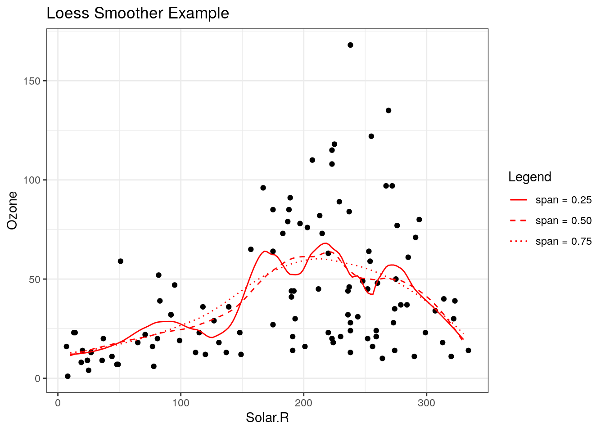
Here we can see that the higher span values appear to provide a better fit. In this case, choosing a low span value would be akin to over fitting a linear model with too high of a degree of polynomial. We can repeat this process to determine appropriate values of span for the other predictors.
Including loess smoothers in a GAM is as simple as including the non-linear terms within lo(). The gam package provides the needed functionality. The script below applies loess smoothers to three of the predictors and displays the model summary (note that the default value for span is 0.5).
library(gam)
aq.gam = gam(Ozone ~ lo(Solar.R, span=0.75) + lo(Wind) + lo(Temp), data=airquality, na=na.gam.replace)
summary(aq.gam)##
## Call: gam(formula = Ozone ~ lo(Solar.R, span = 0.75) + lo(Wind) + lo(Temp),
## data = airquality, na.action = na.gam.replace)
## Deviance Residuals:
## Min 1Q Median 3Q Max
## -47.076 -9.601 -2.721 8.977 76.583
##
## (Dispersion Parameter for gaussian family taken to be 319.3603)
##
## Null Deviance: 125143.1 on 115 degrees of freedom
## Residual Deviance: 33679.85 on 105.4604 degrees of freedom
## AIC: 1010.117
##
## Number of Local Scoring Iterations: NA
##
## Anova for Parametric Effects
## Df Sum Sq Mean Sq F value Pr(>F)
## lo(Solar.R, span = 0.75) 1.00 14248 14248 44.615 1.160e-09 ***
## lo(Wind) 1.00 35734 35734 111.894 < 2.2e-16 ***
## lo(Temp) 1.00 15042 15042 47.099 4.794e-10 ***
## Residuals 105.46 33680 319
## ---
## Signif. codes: 0 '***' 0.001 '**' 0.01 '*' 0.05 '.' 0.1 ' ' 1
##
## Anova for Nonparametric Effects
## Npar Df Npar F Pr(F)
## (Intercept)
## lo(Solar.R, span = 0.75) 1.2 2.9766 0.0804893 .
## lo(Wind) 2.8 9.2752 2.617e-05 ***
## lo(Temp) 2.5 6.8089 0.0006584 ***
## ---
## Signif. codes: 0 '***' 0.001 '**' 0.01 '*' 0.05 '.' 0.1 ' ' 1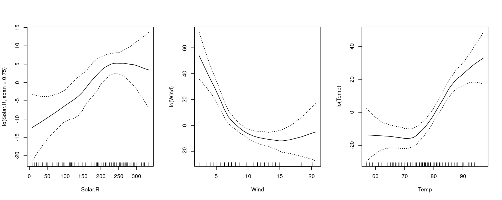
11.3.2 Splines
Spline smoothing can be conceptualized by imagining that your task is to bend a strip of soft metal into a curved shape. One way to do this would be to place pegs on a board (referred to as “knots” in non-linear regression parlance) to control the bends, and then guide the strip of metal over and under the pegs. Mathematically, this is accomplished by combining cubic regression at each knot with calculus to smoothly join the individual bends. The tuning parameter in the smooth.splines function is spar.
aq = aq %>% drop_na()
ss25 = smooth.spline(aq$Solar.R,aq$Ozone,spar=0.25)
ss50 = smooth.spline(aq$Solar.R,aq$Ozone,spar=0.5)
ss75 = smooth.spline(aq$Solar.R,aq$Ozone,spar=0.75)
ggplot() +
geom_point(data=aq, aes(Solar.R, Ozone)) +
geom_line(aes(x=ss25$x, ss25$y, linetype='spar = 0.25'), color='red') +
geom_line(aes(x=ss50$x, ss50$y, linetype='spar = 0.50'), color='red') +
geom_line(aes(x=ss75$x, ss75$y, linetype='spar = 0.75'), color='red') +
scale_linetype_manual(name="Legend", values=c(1,2,3)) +
ggtitle("Spline Smoother Example") +
theme_bw()
11.3.3 Cross Validation
Comparing the spline smoother plot to the one generated with loess smoothers, we can see that the two methods essentially accomplish the same thing. It’s just a matter of finding the right amount of smoothness, which can be done through cross validation. The fANCOVA package contains a function loess.aq() that includes a criterion parameter that we can set to gcv for generalized cross validation, which is an approximation for leave-one-out cross-validation Trevor Hastie and Friedman (2008). Applying this function to the airquality data with Solar.R as the predictor and Ozone as the response, we can obtain a cross validated value for span.
## fANCOVA 0.6-1 loaded## Call:
## loess(formula = y ~ x, data = data.bind, span = span1, degree = degree,
## family = family)
##
## Number of Observations: 111
## Equivalent Number of Parameters: 3.09
## Residual Standard Error: 29.42
## Trace of smoother matrix: 3.56 (exact)
##
## Control settings:
## span : 0.6991628
## degree : 1
## family : gaussian
## surface : interpolate cell = 0.2
## normalize: TRUE
## parametric: FALSE
## drop.square: FALSEloess.as also includes a plot method so we can visualize the loess smoother.

## Call:
## loess(formula = y ~ x, data = data.bind, span = span1, degree = degree,
## family = family)
##
## Number of Observations: 111
## Equivalent Number of Parameters: 3.09
## Residual Standard Error: 29.42Cross validation is also built in to smooth.spline() and is set to generalized cross validation by default. Instead of specifying spar in the call to smooth.spline(), we just leave it out to invoke cross validation.
## Call:
## smooth.spline(x = aq$Solar.R, y = aq$Ozone)
##
## Smoothing Parameter spar= 0.9837718 lambda= 0.01867197 (12 iterations)
## Equivalent Degrees of Freedom (Df): 4.060081
## Penalized Criterion (RSS): 66257.74
## GCV: 892.29Plotting the cross validated spline smoother, we get a line that looks very similar to the lasso smoother.
ggplot() +
geom_point(data=aq, aes(Solar.R, Ozone)) +
geom_line(aes(x=aq.spl$x, aq.spl$y), color='red') +
ggtitle("CV Spline Smoother") +
theme_bw()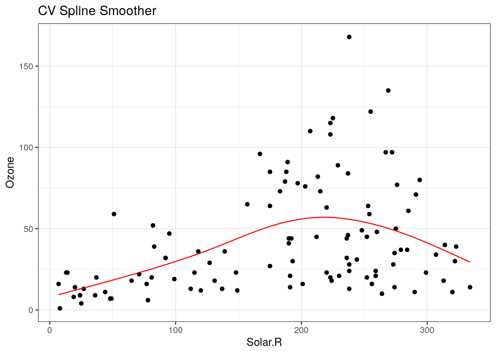
11.4 Support Vector Machines
If you have already been introduced to support vector machines (SVM), chances are that the methodology was applied to a classification problem, which is referred to as support vector classification (SVC). Support vector regression (SVR) is closely related to SVC but is used for linear and non-linear regression problems. We’ll begin with regression, and then move to classification.
11.4.1 Support Vector Regression
SVR attempts to include as many data points as possible in the area between two lines. The following figure demonstrates this using dummy data with a linear relationship. The two parallel lines are the margin, and it’s width is a hyperparameter \(\varepsilon\) that we can tune. If you draw a line through one of the points that fall outside the margin so that it is perpendicular to the margin, you have a support vector. A cost is applied to each point that falls outside the margin, and minimizing the cost determines the slope of the margin. Cost is another tunable hyperparameter, which is sometimes represented as \(1/\lambda\). Notice that unlike linear regression, if we were to add more points inside the margin, it would have no impact on the slope. SVR is also much less influence by outliers than linear regression. For the mathematical details behind SVR, refer to Section 12.3.6 in Trevor Hastie and Friedman (2008).

Choosing values for the hyperparameters \(\varepsilon\) and \(\lambda\) is once again done through cross validation. To do this in R, we’ll use some functions from the e1071 package (another option is the LiblineaR package). Before we get to cross validation, let’s just look at how to build an SVR model. The syntax is the same as for linear models, we just replace lm() with svm(). Note that the function is not svr() because the function can do both regression and classification. To make this more interesting, we’ll switch back to the airquality data. From the model summary below, SVM-type: eps-regression tells us that the function is performing regression and not classification, then we see the hyperparameter values and the number of support vectors used to fit the model.
For the kernel, we have four choices: linear, polynomial, radial basis, and sigmoid. Selecting a linear kernel will force a straight line fit, and the other three kernels are different methods for adding curvature to the regression line36. The theory behind SVR kernels is beyond the scope of this tutorial, but if you want to dig deeper:
Here are some slides titled SVM dual, kernels and regression from The University of Oxford.
Here’s An Idiot’s Guide to Support Vector Machines, a catchy title from MIT.
Here’s post titled Support Vector Machine: Kernel Trick; Mercer’s Theorem at towardsdatascience.com.
For our purposes, we just need to know that the three non-linear kernels have gamma as a hyperparameter that controls curvature.
To force a straight regression line, specify kernel='linear'. Also, the svm() by default scales all variables in the data set to have a mean of zero and equal variance. Scaling the variables will improve the model’s performance, but we’ll turn that off in this example so we can directly compare the coefficients to those produced by lm().
##
## Call:
## svm(formula = Ozone ~ Solar.R, data = aq, kernel = "linear", scale = FALSE)
##
##
## Parameters:
## SVM-Type: eps-regression
## SVM-Kernel: linear
## cost: 1
## gamma: 1
## epsilon: 0.1
##
##
## Number of Support Vectors: 110We can then extract the coefficients with coef().
## (Intercept) Solar.R
## 12.52321429 0.09107143Using lm(), we get the following coefficients.
##
## Call:
## lm(formula = Ozone ~ Solar.R, data = aq)
##
## Residuals:
## Min 1Q Median 3Q Max
## -48.292 -21.361 -8.864 16.373 119.136
##
## Coefficients:
## Estimate Std. Error t value Pr(>|t|)
## (Intercept) 18.59873 6.74790 2.756 0.006856 **
## Solar.R 0.12717 0.03278 3.880 0.000179 ***
## ---
## Signif. codes: 0 '***' 0.001 '**' 0.01 '*' 0.05 '.' 0.1 ' ' 1
##
## Residual standard error: 31.33 on 109 degrees of freedom
## Multiple R-squared: 0.1213, Adjusted R-squared: 0.1133
## F-statistic: 15.05 on 1 and 109 DF, p-value: 0.0001793The coefficients produced by the two models might seem fairly different. The following plot shows the data with the two regression lines for comparison. Notice how the linear model is more influenced by the extreme high ozone values (possible outliers).
ggplot() +
geom_point(data = aq, aes(x=Solar.R, y=Ozone)) +
geom_abline(slope=coeffs[2], intercept=coeffs[1], color='red') +
annotate("text", x=315, y=50, label="svm()", color='red') +
geom_abline(slope=aq.lm$coefficients[2], intercept=aq.lm$coefficients[1], color='blue') +
annotate("text", x=315, y=70, label="lm()", color='blue') +
theme_bw()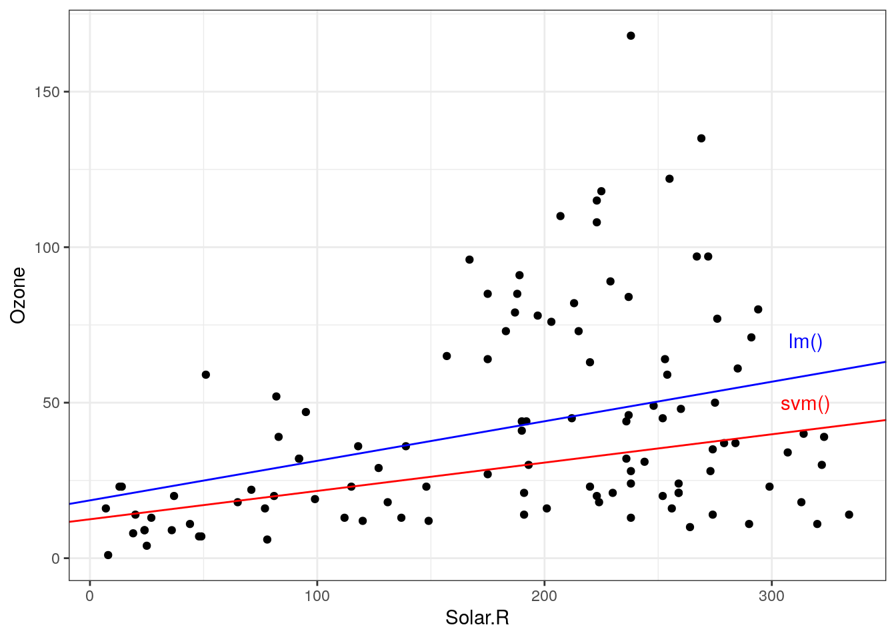
Now we’ll re-fit the model with a non-linear regression line and invoking scaling. To extract the predicted response, we use the predict() function just like with linear models. Plotting the predicted response gives is the following.
aq.svm2 = svm(Ozone ~ Solar.R, data=aq)
aq = aq %>% mutate(svrY = predict(aq.svm2, data=aq))
ggplot(aq) +
geom_point(aes(Solar.R, Ozone), color='black') +
geom_line(aes(Solar.R, svrY), color='red') +
ggtitle("SVR With Default Hyperparameters") +
coord_fixed() +
theme_bw()
To tune the hyperparameters with cross validation, we can use the tune function from the e1017 package. If we give the tune function a range of values for the hyperparameters, it will perform a grid search of those values. In the following example, we’re therefore fitting 100 different models. If we print the object returned from tune, we see that it performed 10-fold cross validation, the best hyperparameter values, and the mean squared error of the best performing model.
set.seed(42)
aq.tune = tune.svm(Ozone ~ Solar.R, data = aq, gamma=seq(0.1, 1, 0.1), cost = seq(1, 100, 10))
print(aq.tune)##
## Parameter tuning of 'svm':
##
## - sampling method: 10-fold cross validation
##
## - best parameters:
## gamma cost
## 0.1 91
##
## - best performance: 909.1502We can visualize the tune results as well by printing the aq.tune object. Here we see the range of cost and epsilon values with their associated mean squared error. The lower the error, the better, and those are indicated by the darkest blue regions.
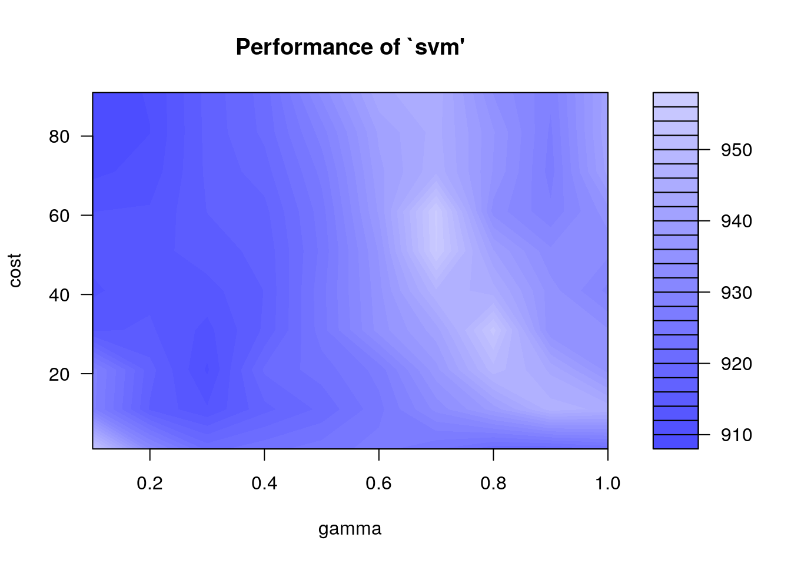
I prefer to choose a wide range of tuning parameter values initially, and then do a finer search in the area with the lowest error. It looks like we need a low gamma and a high cost.
set.seed(42)
aq.tune = tune.svm(Ozone ~ Solar.R, data = aq, gamma=seq(0.02, 0.22, 0.05), cost = seq(80, 100, 2))
print(aq.tune)##
## Parameter tuning of 'svm':
##
## - sampling method: 10-fold cross validation
##
## - best parameters:
## gamma cost
## 0.22 96
##
## - best performance: 907.4115The best model from the tuning call can be obtained with aq.tune$best.model, and we can then apply the predict function to get the best fit regression.
aq$svrY = predict(aq.tune$best.model, data=aq)
ggplot(aq) +
geom_point(aes(Solar.R, Ozone), color='black') +
geom_line(aes(Solar.R, svrY), color='red') +
ggtitle("SVR With Tuned Hyperparameters") +
coord_fixed() +
theme_bw()
11.4.2 Support Vector Classification
Classification problems have either a binary or categorical response variable. To demonstrate how SVC works, we’ll start with the iris data set, which contains four predictors and one categorical response variable. Plotting petal length versus petal width for the setosa and versicolor species shows that the two species are linearly separable, meaning we can draw a straight line on the plot that completely separates the two species. If we want to train an SVC to make predictions on new data, the question becomes: how do we draw the line that separates the data? There are infinitely many options, three of which are shown on the plot.
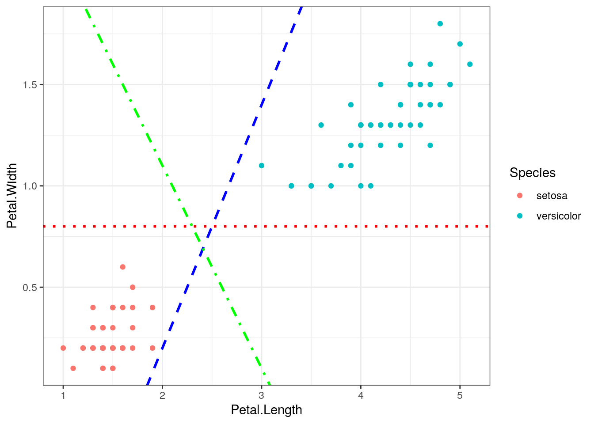
Support vector classification uses margins, but in a different way than SVR, to find a line that separates the data. If you think of the two parallel margin lines as a street, the idea is that we want to fit the widest possible street between the species because doing so results in the rest of the data points being as far off the street as possible. The two points below that fall on the margin determine the location of the support vectors.

What happens when two categories aren’t linearly separable, as is the case when we look at versicolor and virginica below?
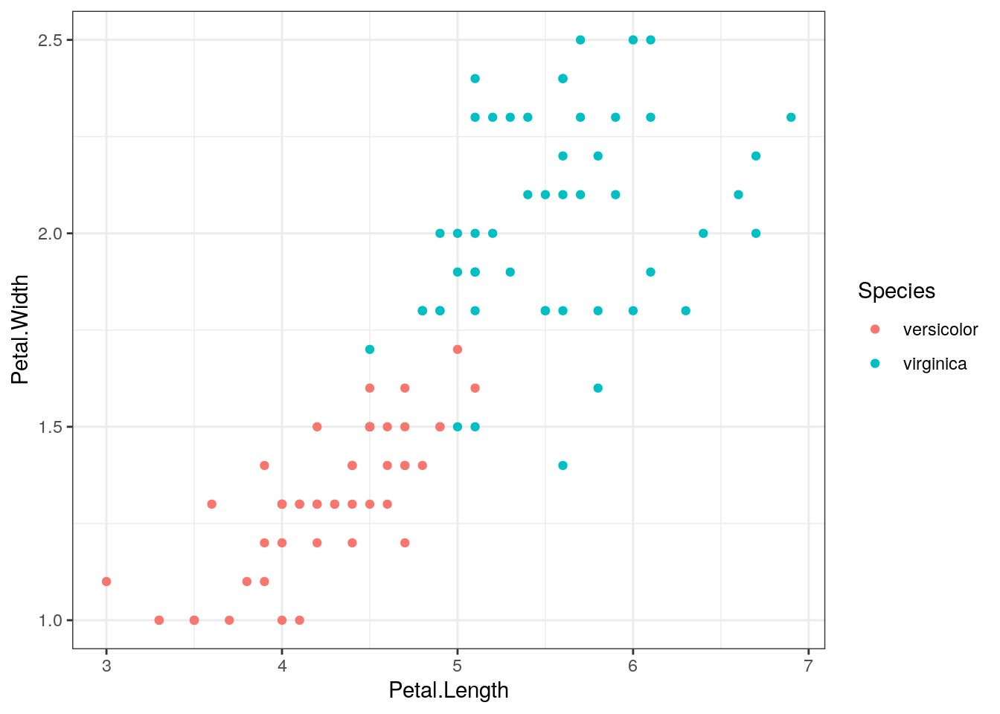
We still want to draw two parallel lines through the data sets, but the only way to do it is to have some observations in the middle of the street, or even on the wrong side of the line (called margin violations). We still want to fit as wide of a street as possible through the data points, but now we must also limit the number of margin violations. As with SVR, we can assign a cost for each margin violation. Since margin violations are generally bad, we might be tempted to apply a large cost; however, we must also consider how well the model will generalize. Below are the linear boundaries for two choices of cost. Support vectors are based on the points surrounded by black.

Interestingly, the margins (and therefore the decision boundary) don’t have to be straight lines. SVC also accommodates a curved boundary as in the example below. With a polynomial kernel, the curvature is controlled by the degree of the polynomial. In the plot, note that the support vectors are the X points.

11.4.2.1 Example In R
In this section, we’ll walk through an example using the full iris data set. First, we’ll split the data set into a training set that includes 80% of the data, and a test set with the remaining 20% using the caTools package.
set.seed(0)
train = caTools::sample.split(iris, SplitRatio = 0.8)
iris_train = subset(iris, train == TRUE)
iris_test = subset(iris, train == FALSE)Next, we’ll tune two models using a linear kernel and a radial basis function (which allows for curvature). We’ll tune both models over a range of gamma and cost values.
iris.lin = tune.svm(Species~., data=iris_train,
kernel="linear",
gamma = seq(0.1, 1, 0.1),
cost = seq(1, 100, 10))
iris.rbf = tune.svm(Species~., data=iris_train,
kernel="radial",
gamma = seq(0.1, 1, 0.1),
cost = seq(1, 100, 10))
iris.lin$best.model##
## Call:
## best.svm(x = Species ~ ., data = iris_train, gamma = seq(0.1, 1,
## 0.1), cost = seq(1, 100, 10), kernel = "linear")
##
##
## Parameters:
## SVM-Type: C-classification
## SVM-Kernel: linear
## cost: 1
##
## Number of Support Vectors: 25##
## Call:
## best.svm(x = Species ~ ., data = iris_train, gamma = seq(0.1, 1,
## 0.1), cost = seq(1, 100, 10), kernel = "radial")
##
##
## Parameters:
## SVM-Type: C-classification
## SVM-Kernel: radial
## cost: 1
##
## Number of Support Vectors: 48Both models are using a low cost, but the radial basis function model has twice as many support vectors. To compare model performance, we’ll make predictions using the test set and display each model’s confusion matrix using the cvms package (note: we could also create a simple confusion matrix with table(iris_test[, 5], predictions)).
# get the confusion matrix for the linear kernel
lin_conf_mat = cvms::confusion_matrix(
targets = iris_test[, 5],
predictions = predict(iris.lin$best.model, type = 'response', newdata = iris_test[-5]))
# get the confusion matrix for the radial kernel
rbf_conf_mat = cvms::confusion_matrix(
targets = iris_test[, 5],
predictions = predict(iris.rbf$best.model, type = 'response', newdata = iris_test[-5]))
# plot the confusion matrix for the linear kernel (it's a ggplot2 object!)
cvms::plot_confusion_matrix(lin_conf_mat$`Confusion Matrix`[[1]]) + ggtitle("Linear Kernel")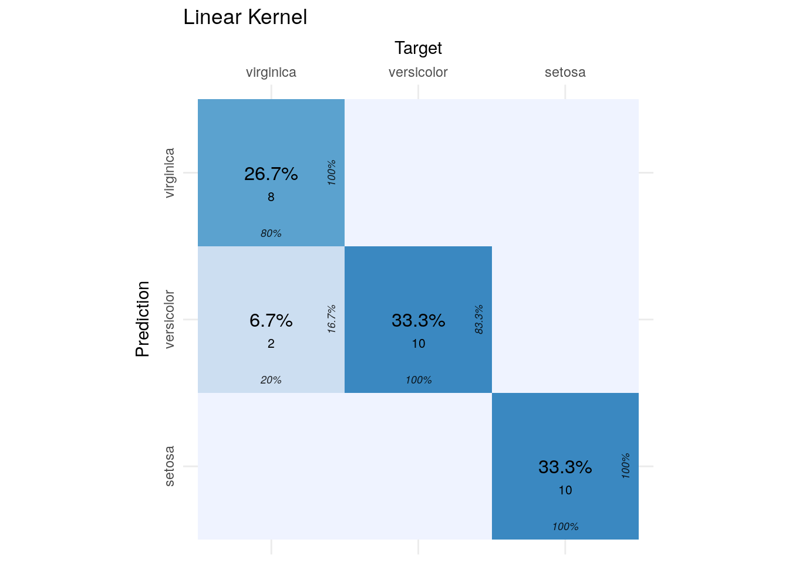
The SVC model with the linear kernel did a great job! Of the 30 observations in the test set, only two were incorrectly classified. If this is the first time you’ve seen a confusion matrix, then what you see are the target (or actual) species by column and the species predictions from the SVC by row. In each cell, we see the percent and count of the total observations that fell into that cell. From this plot, we can identify true positives, false positives, etc. using the following guide.
\(~\)
|
Confusion Matrix |
Target | ||
| Yes | No | ||
| Prediction | Yes |
True Positive |
False Positive |
| No |
False Negative |
True Positive |
|
\(~\)
A perfect classifier will have zeros everywhere in the table except the diagonal. In our case, it’s close to perfect. We just have two false negatives because two flowers that were actually virginica, were predicted to be versicolor. Now let’s look at the radial kernel results.

11.5 Classification and Regression Trees
As with support vector machines, and as the name implies, classification and regression trees37 (CART) can be used for either classification or regression tasks. Again, we’ll start with regression and then move to classification.
11.5.1 Regression Trees
The algorithm is best explained as we walk through an example, and we’ll continue to use the airquality data set. The basic machine learning algorithm used in tree-based methods follows these steps:
Consider the entire data set including all predictors and the response. We call this the root node, and it is represented by the top center node in the figure below. The information displayed in the node includes the mean response for that node (42.1 is the mean of
Ozonefor the whole data set), the number of observations in the node (n=116), and the percent of the overall observations in the node.Iterate through each predictor, \(k\), and split the data into two subsets (referred to as the left and right child nodes) using some threshold, \(t_k\). For example, with the
airqualitydata set, the predictor and threshold could beTemp >= 83. The choice of \(k\) and \(t_k\) for a given split is the pair that increases the “purity” of the child nodes (weighted by their size) the most. We’ll explicitly define purity shortly. If you equate a data split with a decision, then at this point, we have a basic decision tree.

- Each child node in turn becomes the new parent node and the process is repeated. Below is the decision tree produced by the first two splits. Notice that the first split is on the
Temppredictor, and the second split is on theWindpredictor. Although we don’t have coefficients for these two predictors like we would in a linear model, we can still interpret the order of the splits as the predictor’s relative significance. In this case,Tempis the most significant predictor ofOzonefollowed byWind. After two splits, the decision tree has three leaf nodes, which are those in the bottom row. We can also define the depth of the tree as the number rows in the tree below the root node (in this case depth = 2). Note that the sum of the observations in the leaf nodes equals the total number of observations (69 + 10 + 37 = 116), and so the percentages shown in the leaf nodes sum to 100%.
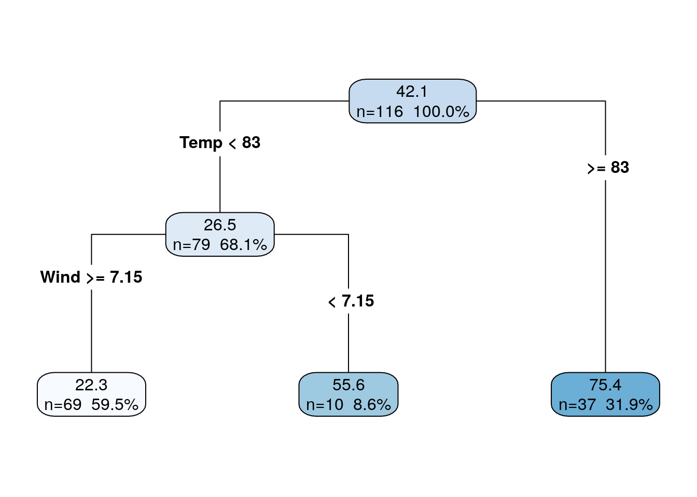
- Continuing the process once more, we see that the third split is again on
Tempbut at a different \(t_k\).
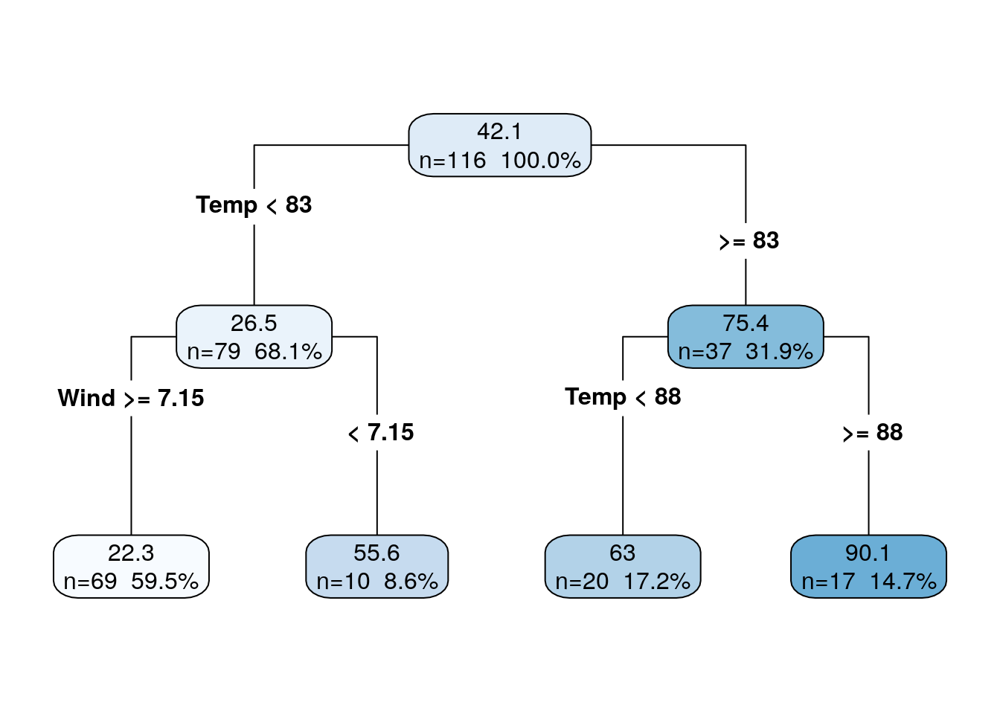
If we continued to repeat the process until each observation was in its own node, then we would have drastically over-fit the model. To control over-fitting, we stop the splitting process when some user-defined condition (or set of conditions) is met. Example stopping conditions include a minimum number of observations in a node or a maximum depth of the tree. We can also use cross validation with a 1 standard error rule to limit the complexity of the final model.
We’ll stop at this point and visually represent this model as a scatter plot. The above leaves from left to right are labeled as Leaf 1 - 4 on the scatter plot.

Plotting predicted Ozone on the z-axis produces the following response surface, which highlights the step-like characteristic of regression tree predictions.
Plotting just Temp versus Ozone in two dimensions further highlights a difference between this method and linear regression. From this plot we can infer that linear regression may outperform CART if there is a smooth trend in the relationship between the predictors and response because CART does not produce smooth estimates.
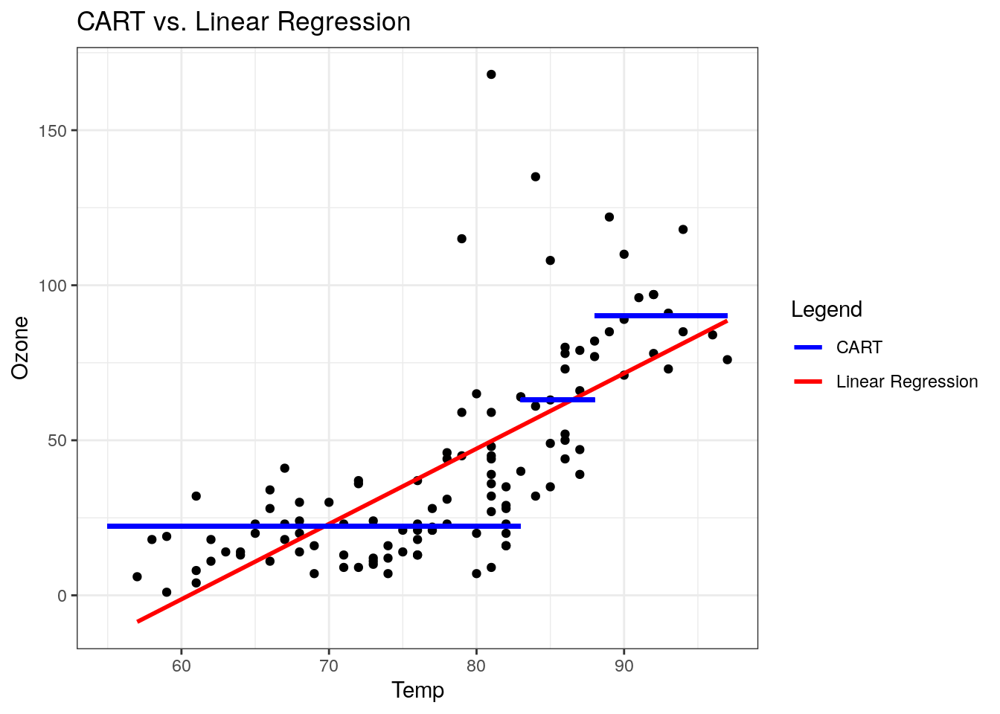
11.5.1.1 Impurity Measure
Previously, it was stated that the predictor-threshold pair chosen for a split was the pair that most increased the purity (or, decreased the impurity) of the child nodes. A node with all identical response values will have an impurity of 0, so that as a node becomes more impure, it’s impurity value increases. We will then define a node’s impurity to be proportional to the residual deviance, which for a continuous response variable like Ozone, is the residual sum of squares (RSS).
\[RSS = \sum\limits_{i\:in\: Node}{(y_{i} - \bar{y})^2}\]
where \(\bar{y}\) is the mean of the y’s in the node.
We’ll start with the first split. To determine which predictor-threshold pair decreases impurity the most, start with the first factor, send the lowest Ozone value to the left node and the remainder to the right node, and calculate RSS for each child node (\(RSS_{left}\) and \(RSS_{right}\)). The decrease in impurity for this split is \(RSS_{root} - (RSS_{left} + RSS_{right})\). Then send the lowest two Ozone values to the left node and the remainder to the right. Repeat this process for each predictor-threshold pair, and split the data based using the pair that decreased impurity the most. Any regression tree package will iterate through all of these combinations for you, but to demonstrate the process explicitly, We’ll just consider the Temp predictor for the first split.
# we'll do a lot of filtering, so convert dataframe to tibble for convenience
# we'll also drop the NA's for the calculations (but the regression tree
# methodology itself doesn't care if there are NA's or not)
aq = as_tibble(airquality) %>% drop_na(Ozone)
# root node deviance
root_dev = sum((aq$Ozone - mean(aq$Ozone))^2)
# keep track of the highest decrease
best_split = 0
# iterate through all the unique Temp values
for(s in sort(unique(aq$Temp))){
left_node = aq %>% filter(Temp <= s) %>% .$Ozone
left_dev = sum((left_node - mean(left_node))^2)
right_node = aq %>% filter(Temp > s) %>% .$Ozone
right_dev = sum((right_node - mean(right_node))^2)
split_dev = root_dev - (left_dev + right_dev)
if(split_dev > best_split){
best_split = split_dev
temp = s + 1} # + 1 because we filtered Temp <= s and Temp is integer
}
print(paste("Best split at Temp <", temp), quote=FALSE)## [1] Best split at Temp < 8311.5.1.2 Tree Deviance
Armed with our impurity measure, we can also calculate the tree deviance, which we’ll use to calculate the regression tree equivalent of \(R^2\). For the tree with the four leaf nodes, we calculate the deviance for each leaf.
# leaf 1
leaf_1 = aq %>% filter(Temp < 83 & Wind >= 7.15) %>% .$Ozone
leaf_1_dev = sum((leaf_1 - mean(leaf_1))^2)
# leaf 2
leaf_2 = aq %>% filter(Temp < 83 & Wind < 7.15) %>% .$Ozone
leaf_2_dev = sum((leaf_2 - mean(leaf_2))^2)
# leaf 3
leaf_3 = aq %>% filter(Temp >= 83 & Temp < 88) %>% drop_na(Ozone) %>% .$Ozone
leaf_3_dev = sum((leaf_3 - mean(leaf_3))^2)
# leaf 4
leaf_4 = aq %>% filter(Temp >= 88) %>% drop_na(Ozone) %>% .$Ozone
leaf_4_dev = sum((leaf_4 - mean(leaf_4))^2)The tree deviance is the sum of the leaf node deviances, which we use to determine how much the entire tree decreases the root deviance.
## [1] 0.6119192The tree decreases the root deviance by 61.2%, which also means that 61.2% of the variability in Ozone is explained by the tree.
11.5.1.3 Prediction
Making a prediction with a new value is easy as following the logic of the decision tree until you end up in a leaf node. The mean of the response values for that leaf node is the prediction for the new value.
11.5.1.4 Pros And Cons
Regression trees have a lot of good things going for them:
- They are easy to explain combined with an intuitive graphic output
- They can handle categorical and numeric predictor and response variables
- They easily handle missing data
- They are robust to outliers
- They make no assumptions about normality
- They can accommodate “wide” data (more predictors than observations)
- They automatically include interactions
Regression trees by themselves and as presented so far have two major drawbacks:
- They do not tend to perform as well as other methods (but there’s a plan for this that makes them one of the best prediction methods around)
- They do not capture simple additive structure (there’s a plan for this, too)
11.5.1.5 Regression Trees in R
The regression trees shown above were grown using the rpart and rpart.plot packages. I didn’t show the code so that we could focus on the algorithm first. Growing a regression tree is as easy as a linear model. The object created by rpart() contains some useful information.
## n=116 (37 observations deleted due to missingness)
##
## node), split, n, deviance, yval
## * denotes terminal node
##
## 1) root 116 125143.1000 42.12931
## 2) Temp< 82.5 79 42531.5900 26.54430
## 4) Wind>=7.15 69 10919.3300 22.33333
## 8) Solar.R< 79.5 18 777.1111 12.22222 *
## 9) Solar.R>=79.5 51 7652.5100 25.90196
## 18) Temp< 77.5 33 2460.9090 21.18182 *
## 19) Temp>=77.5 18 3108.4440 34.55556 *
## 5) Wind< 7.15 10 21946.4000 55.60000 *
## 3) Temp>=82.5 37 22452.9200 75.40541
## 6) Temp< 87.5 20 12046.9500 62.95000
## 12) Wind>=8.9 7 617.7143 45.57143 *
## 13) Wind< 8.9 13 8176.7690 72.30769 *
## 7) Temp>=87.5 17 3652.9410 90.05882 *First, we see that the NAs were deleted, and then we see the tree structure in a text format that includes the node number, how the node was split, the number of observations in the node, the deviance, and the mean response. To plot the tree, use rpart.plot() or prp().
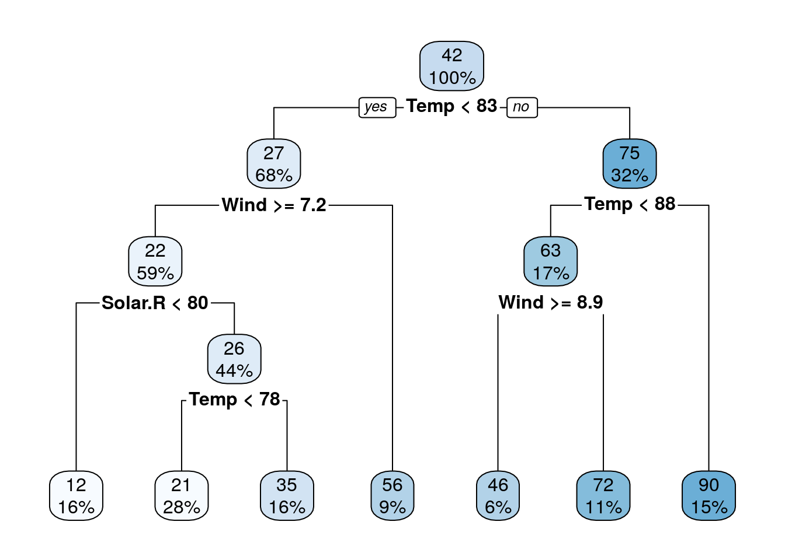
rpart.plot() provides several options for customizing the plot, among them are digits, type, and extra, which I invoked to produce the earlier plots. Refer to the help to see all of the options.
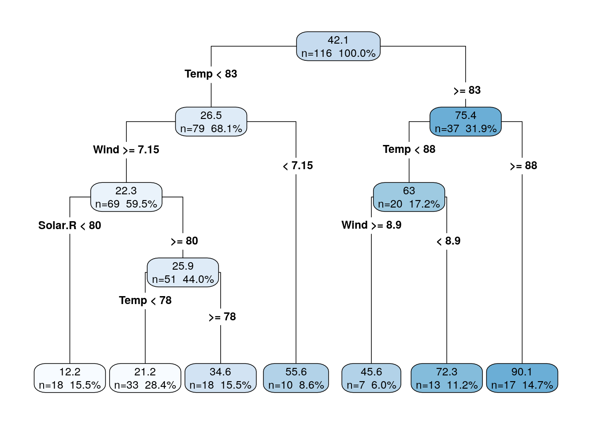
Another useful function is printcp(), which provides a deeper glimpse into what’s going on in the algorithm. Here we see that just three predictors were used to grow the tree (Solar.R, Temp, and Wind). This means that the other predictors did not significantly contribute to increasing node purity, which is equivalent to a predictor in a linear model with a high p-value. We also see the root node error (weighted by the number of observations in the root node).
In the table, printcp() provides optimal tuning based on a complexity parameter (CP), which we can manipulate to manually “prune” the tree, if desired. The relative error column is the amount of reduction in root deviance for each split. For example, in our earlier example with three splits and four leaf nodes, we had a 61.2% reduction in root deviance, and below we see that at an nsplit of 3, we also get \(1.000 - 0.388 = 61.2\)%.38 xerror and xstd are cross-validation error and standard deviation, respectfully, so we get cross validation built-in for free!
##
## Regression tree:
## rpart(formula = Ozone ~ ., data = airquality)
##
## Variables actually used in tree construction:
## [1] Solar.R Temp Wind
##
## Root node error: 125143/116 = 1078.8
##
## n=116 (37 observations deleted due to missingness)
##
## CP nsplit rel error xerror xstd
## 1 0.480718 0 1.00000 1.01865 0.16890
## 2 0.077238 1 0.51928 0.61672 0.19729
## 3 0.053962 2 0.44204 0.68502 0.18631
## 4 0.025990 3 0.38808 0.53568 0.15111
## 5 0.019895 4 0.36209 0.53216 0.15103
## 6 0.016646 5 0.34220 0.54833 0.16382
## 7 0.010000 6 0.32555 0.53996 0.16385With plotcp() we can see the 1 standard error rule implemented in the same manner we’ve seen before to identify the best fit model. At the top of the plot, the number of splits is displayed so that we can choose two splits when defining the best fit model.

Specify the best fit model using the cp parameter with a value slightly greater than shown in the table.

As with lm() objects, the summary() function provides a wealth of information. Note the results following variable importance. Earlier we opined that the first split on Temp indicated that is was the most significant predictor followed by Wind. The rpart documentation provides a detailed description of variable importance:
An overall measure of variable importance is the sum of the goodness of split measures for each split for which it was the primary variable, plus goodness * (adjusted agreement) for all splits in which it was a surrogate.
Note that the results are scaled so that they sum to 100, which is useful for directly comparing each predictor’s relative contribution.
## Call:
## rpart(formula = Ozone ~ ., data = airquality)
## n=116 (37 observations deleted due to missingness)
##
## CP nsplit rel error xerror xstd
## 1 0.48071820 0 1.0000000 1.0186538 0.1689020
## 2 0.07723849 1 0.5192818 0.6167174 0.1972945
## 3 0.05396246 2 0.4420433 0.6850207 0.1863083
## 4 0.02598999 3 0.3880808 0.5356794 0.1511121
## 5 0.01989493 4 0.3620909 0.5321568 0.1510310
## 6 0.01664620 5 0.3421959 0.5483283 0.1638152
## 7 0.01000000 6 0.3255497 0.5399625 0.1638533
##
## Variable importance
## Temp Wind Day Solar.R Month
## 60 28 8 2 2
##
## Node number 1: 116 observations, complexity param=0.4807182
## mean=42.12931, MSE=1078.819
## left son=2 (79 obs) right son=3 (37 obs)
## Primary splits:
## Temp < 82.5 to the left, improve=0.48071820, (0 missing)
## Wind < 6.6 to the right, improve=0.40426690, (0 missing)
## Solar.R < 153 to the left, improve=0.21080020, (5 missing)
## Month < 6.5 to the left, improve=0.11595770, (0 missing)
## Day < 24.5 to the left, improve=0.08216807, (0 missing)
## Surrogate splits:
## Wind < 6.6 to the right, agree=0.776, adj=0.297, (0 split)
## Day < 10.5 to the right, agree=0.724, adj=0.135, (0 split)
##
## Node number 2: 79 observations, complexity param=0.07723849
## mean=26.5443, MSE=538.3746
## left son=4 (69 obs) right son=5 (10 obs)
## Primary splits:
## Wind < 7.15 to the right, improve=0.22726310, (0 missing)
## Temp < 77.5 to the left, improve=0.22489660, (0 missing)
## Day < 24.5 to the left, improve=0.13807170, (0 missing)
## Solar.R < 153 to the left, improve=0.10449720, (2 missing)
## Month < 8.5 to the right, improve=0.01924449, (0 missing)
##
## Node number 3: 37 observations, complexity param=0.05396246
## mean=75.40541, MSE=606.8356
## left son=6 (20 obs) right son=7 (17 obs)
## Primary splits:
## Temp < 87.5 to the left, improve=0.300763900, (0 missing)
## Wind < 10.6 to the right, improve=0.273929800, (0 missing)
## Solar.R < 273.5 to the right, improve=0.114526900, (3 missing)
## Day < 6.5 to the left, improve=0.048950680, (0 missing)
## Month < 7.5 to the left, improve=0.007595265, (0 missing)
## Surrogate splits:
## Wind < 6.6 to the right, agree=0.676, adj=0.294, (0 split)
## Month < 7.5 to the left, agree=0.649, adj=0.235, (0 split)
## Day < 27.5 to the left, agree=0.622, adj=0.176, (0 split)
##
## Node number 4: 69 observations, complexity param=0.01989493
## mean=22.33333, MSE=158.2512
## left son=8 (18 obs) right son=9 (51 obs)
## Primary splits:
## Solar.R < 79.5 to the left, improve=0.22543670, (1 missing)
## Temp < 77.5 to the left, improve=0.21455360, (0 missing)
## Day < 27 to the left, improve=0.05183544, (0 missing)
## Wind < 10.6 to the right, improve=0.04850548, (0 missing)
## Month < 8.5 to the right, improve=0.01998100, (0 missing)
## Surrogate splits:
## Temp < 63.5 to the left, agree=0.794, adj=0.222, (1 split)
## Wind < 16.05 to the right, agree=0.750, adj=0.056, (0 split)
##
## Node number 5: 10 observations
## mean=55.6, MSE=2194.64
##
## Node number 6: 20 observations, complexity param=0.02598999
## mean=62.95, MSE=602.3475
## left son=12 (7 obs) right son=13 (13 obs)
## Primary splits:
## Wind < 8.9 to the right, improve=0.269982600, (0 missing)
## Month < 7.5 to the right, improve=0.078628670, (0 missing)
## Day < 18.5 to the left, improve=0.073966850, (0 missing)
## Solar.R < 217.5 to the left, improve=0.058145680, (3 missing)
## Temp < 85.5 to the right, improve=0.007674142, (0 missing)
##
## Node number 7: 17 observations
## mean=90.05882, MSE=214.8789
##
## Node number 8: 18 observations
## mean=12.22222, MSE=43.17284
##
## Node number 9: 51 observations, complexity param=0.0166462
## mean=25.90196, MSE=150.0492
## left son=18 (33 obs) right son=19 (18 obs)
## Primary splits:
## Temp < 77.5 to the left, improve=0.27221870, (0 missing)
## Wind < 10.6 to the right, improve=0.09788213, (0 missing)
## Day < 22.5 to the left, improve=0.07292523, (0 missing)
## Month < 8.5 to the right, improve=0.04981065, (0 missing)
## Solar.R < 255 to the right, improve=0.03603008, (1 missing)
## Surrogate splits:
## Month < 6.5 to the left, agree=0.686, adj=0.111, (0 split)
## Wind < 10.6 to the right, agree=0.667, adj=0.056, (0 split)
##
## Node number 12: 7 observations
## mean=45.57143, MSE=88.2449
##
## Node number 13: 13 observations
## mean=72.30769, MSE=628.9822
##
## Node number 18: 33 observations
## mean=21.18182, MSE=74.573
##
## Node number 19: 18 observations
## mean=34.55556, MSE=172.6914The best fit model contains two predictors and explains 55.8% of the variance in Ozone as shown below.
##
## Regression tree:
## rpart(formula = Ozone ~ ., data = airquality, cp = 0.055)
##
## Variables actually used in tree construction:
## [1] Temp Wind
##
## Root node error: 125143/116 = 1078.8
##
## n=116 (37 observations deleted due to missingness)
##
## CP nsplit rel error xerror xstd
## 1 0.480718 0 1.00000 1.00498 0.16717
## 2 0.077238 1 0.51928 0.56181 0.17679
## 3 0.055000 2 0.44204 0.58220 0.18019How does it compare to a linear model with the same two predictors? The linear model explains 56.1% of the variance in Ozone, which is only slightly more than the regression tree. Earlier I claimed there was a plan for improving the performance of regression trees. That plan is revealed in the next section on Random Forests.
##
## Call:
## lm(formula = Ozone ~ Wind + Temp, data = airquality)
##
## Residuals:
## Min 1Q Median 3Q Max
## -41.251 -13.695 -2.856 11.390 100.367
##
## Coefficients:
## Estimate Std. Error t value Pr(>|t|)
## (Intercept) -71.0332 23.5780 -3.013 0.0032 **
## Wind -3.0555 0.6633 -4.607 1.08e-05 ***
## Temp 1.8402 0.2500 7.362 3.15e-11 ***
## ---
## Signif. codes: 0 '***' 0.001 '**' 0.01 '*' 0.05 '.' 0.1 ' ' 1
##
## Residual standard error: 21.85 on 113 degrees of freedom
## (37 observations deleted due to missingness)
## Multiple R-squared: 0.5687, Adjusted R-squared: 0.5611
## F-statistic: 74.5 on 2 and 113 DF, p-value: < 2.2e-1611.5.2 Random Forest Regression
In 1994, Leo Breiman at UC, Berkeley published this paper in which he presented a method he called Bootstrap AGGregation (or BAGGing) that improves the predictive power of regression trees by growing many trees (a forest) using bootstrapping techniques (thereby making it a random forest). The details are explained in the link to the paper above, but in short, we grow many trees, each on a bootstrapped sample of the training set (i.e., sample \(n\) times with replacement from a data set of size \(n\)). Then, to make a prediction, we either let each tree “vote” and predict based on the most votes, or we use the average of the estimated responses. Cross-validation isn’t necessary with this method because each bootstrapped tree has an internal error, referred to as the out-of-bag (OOB) error. With this method, about a third of the samples are left out of the bootstrapped sample, a prediction is made, and the OOB error calculated. The algorithm stops when the OOB error begins to increase.
A drawback of the method is that larger trees tend to be correlated with each other, and so in a 2001 paper, Breiman developed a method to lower the correlation between trees. For each bootstrapped sample, his idea was to use a random selection of predictors to split each node. The number of randomly selected predictors, mtry, is a function of the total number of predictors in the data set. For regression, the randomForest() function from the randomForest package uses \(1/k\) as the default mtry value, but this can be manually specified. The following code chunks demonstrate the use of some of the randomForest functions. First, we fit a random forest model and specify that we want to assess the importance of predictors, omit NAs, and randomly sample two predictors at each split (mtry). There are a host of other parameters that can be specified, but we’ll keep them all at their default settings for this example.
library(randomForest)
set.seed(42)
aq.rf<- randomForest(Ozone~., importance=TRUE, na.action=na.omit, mtry=2, data=airquality)
aq.rf##
## Call:
## randomForest(formula = Ozone ~ ., data = airquality, importance = TRUE, mtry = 2, na.action = na.omit)
## Type of random forest: regression
## Number of trees: 500
## No. of variables tried at each split: 2
##
## Mean of squared residuals: 301.7377
## % Var explained: 72.5This random forest model consists of 500 trees and explains 72.% of the variance in Ozone, which is a nice improvement over the 55.8% we got with the single regression tree. Plotting the aq.rf object shows the error as a function of the size of the forest. We want to see the error stabilize as the number of trees increases, which it does in the plot below.

11.5.2.1 Interpretation
When the relationships between predictors and response are non-linear and complex, random forest models generally perform better than standard linear models. However, the increase in predictive power comes with a corresponding decrease in interpretability. For this reason, random forests and some other machine learning-based models such as neural networks are sometimes referred to as “black box” models. If you are applying machine learning techniques to build a model that performs optical character recognition, you might not be terribly concerned about the interpretability of your model. However, if your model will be used to inform a decision maker, interpretability is much more important - especially if you are asked to explain the model to the decision maker. In fact, some machine learning practitioners argue against using black box models for all high stakes decision making. For example, read this paper by Cynthia Rudin, a computer scientist at Duke University. Recently, advancements have been made in improving the interpretability of some types of machine learning models (for example, download and read this paper from h2o.ai or this e-book by Christoph Molnar, a Ph.D. candidate at the University of Munich), and we will explore these techniques below.
Linear models have coefficients (the \(\beta\)s) that explain the nature of the relationship between predictors and the response. Classification and regression trees have an analogous concept of variable importance, which can be extended to random forest models. The documentation for importance() from the randomForest package provides the following definitions of two variable importance measures:
The first measure is computed from permuting OOB data: For each tree, the prediction error on the out-of-bag portion of the data is recorded (error rate for classification, MSE for regression). Then the same is done after permuting each predictor variable. The difference between the two are then averaged over all trees, and normalized by the standard deviation of the differences. If the standard deviation of the differences is equal to 0 for a variable, the division is not done (but the average is almost always equal to 0 in that case).
The second measure is the total decrease in node impurities from splitting on the variable, averaged over all trees. For classification, the node impurity is measured by the Gini index. For regression, it is measured by residual sum of squares.
These two measures can be accessed with:
## %IncMSE IncNodePurity
## Solar.R 13.495267 15939.238
## Wind 19.989633 39498.922
## Temp 37.489127 48112.583
## Month 4.053344 4160.278
## Day 3.052987 9651.722Alternatively, we can plot variable importance with varImpPlot().

Variable importance can be related to a linear model coefficient in that a large variable importance value is akin to a large coefficient value. However, it doesn’t indicate whether the coefficient is positive or negative. For example, from the above plot, we see that Temp is an important predictor of Ozone, but we don’t know if increasing temperatures result in increasing or decreasing ozone measurements (or if it’s a non-linear relationship). Partial dependence plots (PDP) were developed to solve this problem, and they can be interpreted in the same way as a loess or spline smoother.
For the airquality data, one would expect that increasing temperatures would increase ozone concentrations, and that increasing wind speed would decrease ozone concentrations. The partialPlot() function provided with the randomForest package produces PDPs, but they are basic and difficult to customize. Instead, we’ll use the pdp package, which works nicely with ggplot2 and includes a loess smoother (another option is the iml package - for interpretable machine learning - which we’ll also explore).
#library(pdp)
p3 = aq.rf %>%
pdp::partial(pred.var = "Temp") %>% # from the pdp package
autoplot(smooth = TRUE, ylab = expression(f(Temp))) +
theme_bw() +
ggtitle("Partial Dependence of Temp")
p4 = aq.rf %>%
pdp::partial(pred.var = "Wind") %>%
autoplot(smooth = TRUE, ylab = expression(f(Temp))) +
theme_bw() +
ggtitle("Partial Dependence of Wind")
gridExtra::grid.arrange(p3, p4, ncol=2)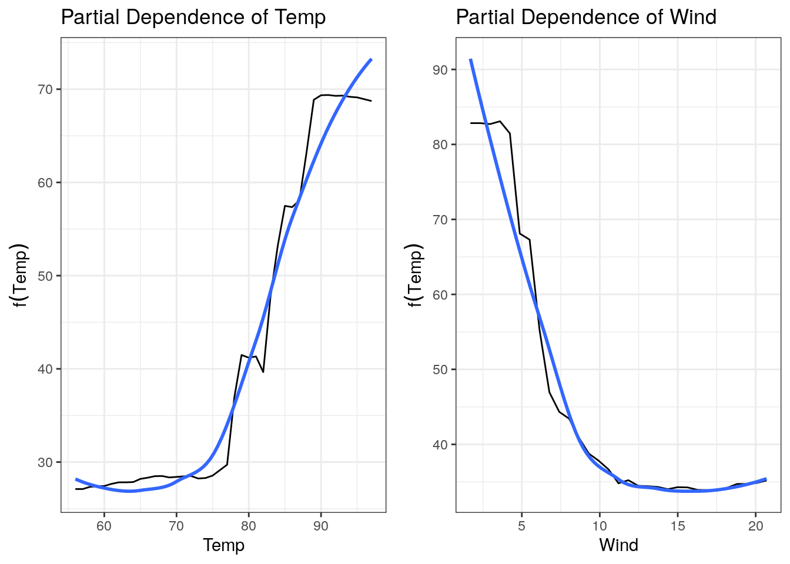
Earlier, we produced a response surface plot based on a regression tree. Now we can produce a response surface based on the random forest model, which looks similar but more detailed. Specifying chull = TRUE (chull stands for convex hull) limits the plot to the range of values in the training data set, which prevents predictions being shown for regions in which there is no data. A 2D heat map and a 3D mesh are shown below.
# Compute partial dependence data for Wind and Temp
pd = pdp::partial(aq.rf, pred.var = c("Wind", "Temp"), chull = TRUE)
# Default PDP
pdp1 = pdp::plotPartial(pd)
# 3-D surface
pdp2 = pdp::plotPartial(pd, levelplot = FALSE, zlab = "Ozone",
screen = list(z = -20, x = -60))
gridExtra::grid.arrange(pdp1, pdp2, ncol=2)
The iml package was developed by Christoph Molnar, the Ph.D. candidate referred to earlier, and contains a number of useful functions to aid in model interpretation. In machine learning vernacular, predictors are commonly called features, so instead of variable importance, we’ll get feature importance. With this package, we can calculate feature importance and produce PDPs as well, and a grid of partial dependence plots are shown below. Note the addition of a rug plot at the bottom of each subplot, which helps identify regions where observations are sparse and where the model might not perform as well.
#library(iml) # for interpretable machine learning
#library(patchwork) # for arranging plots - similar to gridExtra
# iml doesn't like NAs, so we'll drop them from the data and re-fit the model
aq = airquality %>% drop_na()
aq.rf2 = randomForest(Ozone~., importance=TRUE, na.action=na.omit, mtry=2, data=aq)
# provide the random forest model, the features, and the response
predictor = iml::Predictor$new(aq.rf2, data = aq[, 2:6], y = aq$Ozone)
PDP = iml::FeatureEffects$new(predictor, method='pdp')
PDP$plot() & theme_bw()## Warning: UNRELIABLE VALUE: Future ('future_lapply-1') unexpectedly generated
## random numbers without specifying argument 'future.seed'. There is a risk that
## those random numbers are not statistically sound and the overall results might
## be invalid. To fix this, specify 'future.seed=TRUE'. This ensures that proper,
## parallel-safe random numbers are produced via the L'Ecuyer-CMRG method. To
## disable this check, use 'future.seed=NULL', or set option 'future.rng.onMisuse'
## to "ignore".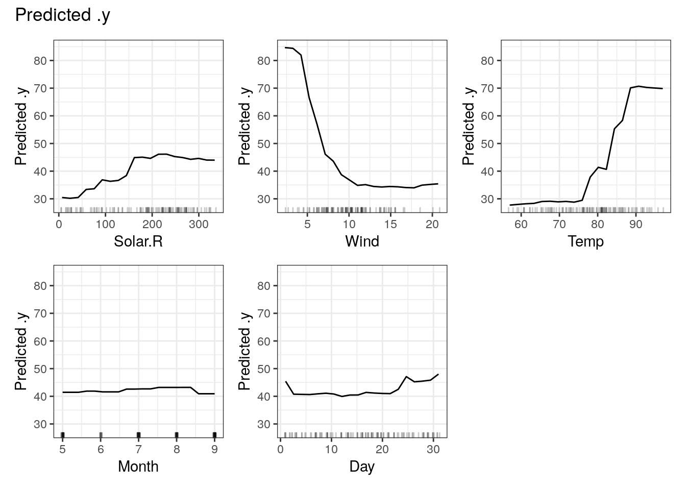
PDPs show the average feature effect, but if we’re interested in the effect for one or more individual observations, then an Individual Conditional Expectation (ICE) plot is useful. In the following plot, each black line represents one of the 111 observations in the data set, and the global partial dependence is shown in yellow. Since the individual lines are generally parallel, we can see that each individual observation follows the same general trend: increasing temperatures have little effect on ozone until around 76 degrees, at which point all observations increase. In the mid 80s, there are a few observations that have a decreasing trend while the majority continue to increase, which indicates temperature may be interacting with one or more other features. Generally speaking, however, since the individual lines are largely parallel, we can conclude that the partial dependence measure is a good representation of the whole data set.
ice = iml::FeatureEffect$new(predictor, feature = "Temp", method='pdp+ice') #center.at = min(aq$Temp))
ice$plot() + theme_bw()
One of the nice attributes of tree-based models is their ability to capture interactions. The interaction effects can be explicitly measured and plotted as shown below. The x-axis scale is the percent of variance explained by interaction for each feature, so Wind, Temp, and Solar.R all have more than 10% of their variance explained by an interaction.
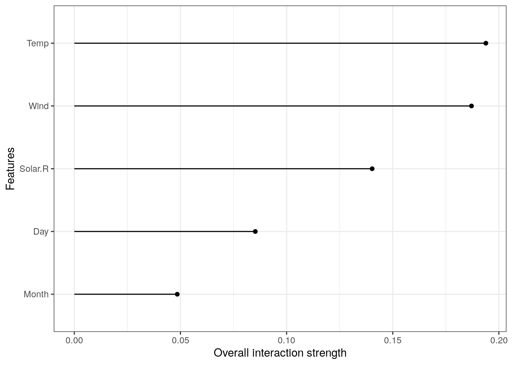
To identify what the feature is interacting with, just specify the feature name. For example, Temp interactions are shown below.

11.5.2.2 Predictions
Predictions for new data are made the usual way with predict(), which is demonstrated below using the first two rows of the airquality data set.
## 1 2
## 38.50243 31.3982711.5.3 Random Forest Classification
For a classification example, we’ll skip over simple classification trees and jump straight to random forests. There is very little difference in syntax with the randomForest() function when performing classification instead of regression. For this demonstration, we’ll use the iris data set so we can compare results with the SVC results. We’ll use the same training and test sets as earlier.
##
## Call:
## randomForest(formula = Species ~ ., data = iris_train, importance = TRUE)
## Type of random forest: classification
## Number of trees: 500
## No. of variables tried at each split: 2
##
## OOB estimate of error rate: 4.17%
## Confusion matrix:
## setosa versicolor virginica class.error
## setosa 40 0 0 0.000
## versicolor 0 37 3 0.075
## virginica 0 2 38 0.050The model seems to have a little trouble distinguishing virginica from versicolor. The linear SVC misclassified two observations in the test set, and the radial SVC misclassified one. Before we see how the random forest does, let’s make sure we grew enough trees. We can make a visual check by plotting the random forest object.
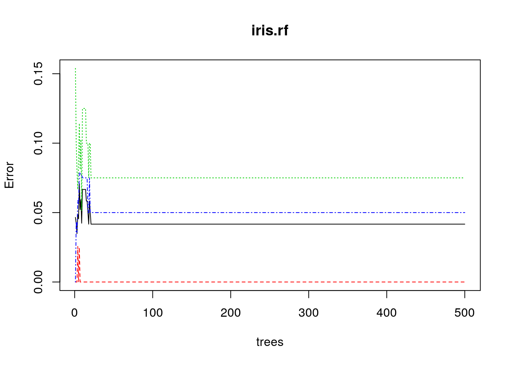
No issue there! Looks like 500 trees was plenty. Taking a look at variable importance shows that petal width and length are far more important than sepal width and length.

Since the response variable is categorical with three levels, a little work is required to get partial dependence plots for each predictor-response combination. Below are the partial dependence plots for Petal.Width for each species. The relationship between petal width and species varies significantly based on the species, which is what makes petal width have a high variable importance.
as_tibble(iris.rf %>%
pdp::partial(pred.var = "Petal.Width", which.class=1) %>% # which.class refers to the factor level
mutate(Species = levels(iris$Species)[1])) %>%
bind_rows(as_tibble(iris.rf %>%
pdp::partial(pred.var = "Petal.Width", which.class=2) %>%
mutate(Species = levels(iris$Species)[2]))) %>%
bind_rows(as_tibble(iris.rf %>%
pdp::partial(pred.var = "Petal.Width", which.class=3) %>%
mutate(Species = levels(iris$Species)[3]))) %>%
ggplot() +
geom_line(aes(x=Petal.Width, y=yhat, col=Species), size=1.5) +
ggtitle("Partial Dependence of Petal.Width") +
theme_bw()
Enough visualizing. Time to get the confusion matrix for the random forest model using the test set.
# get the confusion matrix
rf_conf_mat = cvms::confusion_matrix(
targets = iris_test[, 5],
predictions = predict(iris.rf, newdata = iris_test[-5]))
# plot the confusion matrix
cvms::plot_confusion_matrix(rf_conf_mat$`Confusion Matrix`[[1]]) + ggtitle("Random Forest")
Two observations were misclassified just like with the linear SVC. Let’s see if they’re the same two observations.
# the indices of the misclassified flowers from SVC
which(iris_test[, 5] != predict(iris.lin$best.model, newdata = iris_test[-5]))## [1] 24 27# the indices of the misclassified flowers from random forest
which(iris_test[, 5] != predict(iris.rf, newdata = iris_test[-5]))## [1] 24 27References
Devore, Jay. 2015. Probability and Statisticsfor Engineering and the Sciences. 9th ed. Cengage Learning.
Trevor Hastie, Robert Tibshirani, and Jerome Friedman. 2008. The Elements of Statistical Learning. Springer.